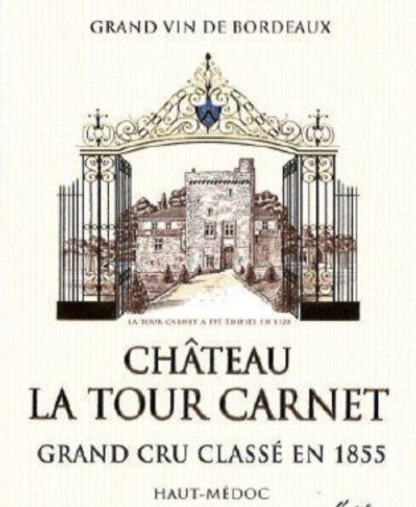

拉图嘉利庄园红葡萄酒（正牌）
Chateau La Tour Carnet
基本信息
产区
 法国
France
法国
France
波尔多，上梅多克产区
Bordeaux, Haut-Medoc

拉图嘉利庄园
Chateau la Tour Carnet
配餐
味道
酸
甜
苦
辣
咸
鲜
食物
牛羊肉
鸡肉
海鲜
野味
蔬菜
淀粉类
奶酪
甜点
烹饪
生食
清蒸
烘烤
烟熏
油炸
重酱
建议配餐
根据选择展示配餐1
根据选择展示配餐2
根据选择展示配餐3
酒评
权威酒评（4.5／5）
用户酒评（4／5）